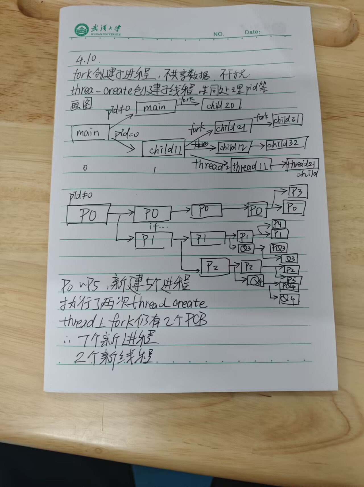
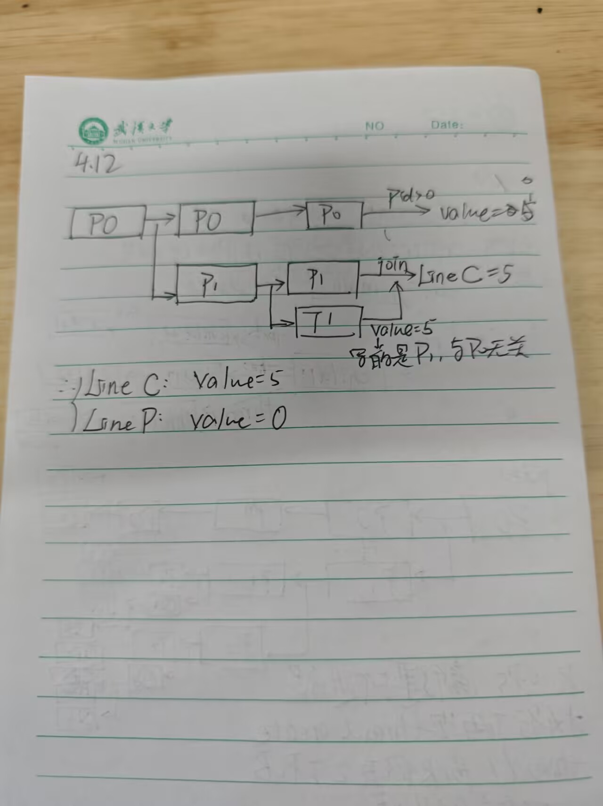

1&2¶


3¶
题目描述¶
- 设某个多线程的程序代码如下所示。其中，
pthread_create函数创建一个独立线程，参数包括线程标识符、函数名称和函数的参数；父线程通过调用pthread_join函数以等待子进程的结束；线程通过调用pthread_exit函数结束。具体的函数说明如下表所示。
函数说明表¶
| 类别 | 内容 |
|---|---|
| 函数定义 | int pthread_create(pthread_t *tidp, const pthread_attr_t *attr, void* (*start_rtn)(void*), void *arg); |
| 参数说明 | tidp: 指向线程标识符的指针 attr: 设置线程属性 start_rtn: 线程运行函数的指针 arg: 运行函数的参数 |
| 返回值 | 若线程创建成功，则返回 0。若线程创建失败，则返回出错编号。 |
| 函数定义 | int pthread_join(pthread_t thread, void **retval); |
| 描述 | pthread_join() 函数以阻塞的方式等待 thread 指定的线程结束。当函数返回时，被等待线程的资源被收回。如果线程已经结束，那么该函数会立即返回。并且 thread 指定的线程必须是 joinable 的。 |
| 参数 | thread: 线程标识符，即线程 ID，标识唯一线程 retval: 用户定义的指针，用来存储被等待线程的返回值。 |
| 返回值 | 0 代表成功。失败，返回的则是错误编号。 |
程序代码¶
C
1 int i = 100;
2 char *buf;
3
4 void *tfun(void *noarg) {
5 int j = 0;
6 printf("T Child: i=%d, j=%d\n", i, j);
7 printf("T Child: i=%d, j=%d\n", i, j);
8 j = 3;
9 strcpy(buf, "cool");
10 pthread_exit(NULL);
11 }
12
13 void thread() {
14 pthread_t tid;
15 int j = 1;
16 buf = strcpy(malloc(100), "boring");
17 pthread_create(&tid, NULL, tfun, NULL);
18 printf("T Parent: j=%d\n", j);
19 i = 162;
20 j = 2;
21 printf("T Parent: j=%d\n", j);
22 printf("T Parent: %s\n", buf);
23 j = 4;
24 pthread_join(tid, NULL);
25 }
问题分析¶
执行上述程序的输出结果中是否会包含以下三组序列，给出分析说明。
| (1) | (2) | (3) |
|---|---|---|
| T Parent: j=1 ; T Child: i=100, j=1 ; T Parent: j=2 | T Parent: j=1 ; T Parent: j=2 ; T Child: i=100, j=1 | T Parent: cool |
分析¶
与fork申请PCB构建进程不同 thread的create是接近并发工作的 相关执行情况需要看内核的调度
关键在于函数 pthread_create(&tid, NULL, tfun, NULL); tid是分配给thread的id标识 tfun是线程执行的函数 同主线程一并执行
此时创建了tfun和thread两个线程 同步执行
分析一下 tfun会写的数据为
- j赋值为0
- 打印T child ~ i j的相关信息
- j赋值为3
- 写buf为
cool
在此之后 thread函数的行为
- 打印T Parent ~ j
- 写i 为 162
- 写j 为 2
- 打印T Parent ~ j
- 打印缓冲区
这里的pthread_join(tid, NULL) 表示thread线程必须等子线程完成之后再结束 当然对于输出没有影响
然后开始梳理
Case1¶
T Parent: j=1是可能的 在tfun给j写为0之前thread给j为1print出来
但是T Child: i=100, j=1是不可能的 如果执行到tfun的printf("T Child: i=%d, j=%d\n", i, j); 就必定给j写为0了
Case2¶
T Parent: j=1可能 同上
T Parent: j=2也可能 如果内核给thread更多的资源分配 就可以在tfun给j写为0前执行完thread的j写为2 并且print出来
T Child: i=100, j=1但这个就是不可能的了 j被写为其他值后就没法重新赋值为1
Case3¶
T Parent: cool可能 只需要子线程tfun在 printf buf前执行完即可
所以说只有T Parent: cool可能出现